How to build a movie (easy)
This tutorial needs at least
white_dune version 1.556.
First a few informations to read
On some systems (e.g. Linux KDE/Gnome and SGI IRIX 4dwm), there is a
program icon fuer "dune4kids", it looks something like this:


On systems like Micro$oft Windows or MacOSX there is only one (other)
programm icon:


Normally, the program of this icon starts with the english full version,
usually with very much icons and too much menues.

In this case, you have to switch to dune4kids.
You have to
click here to switch to the right version.

What to do, if the program crashes ?
With a bit of luck, you can load the last situation, if there is a
new ".dune_crash" file in the list of recent files.

Navigation
Navigation means the movment in the 3D modell.
This is important, cause it can happen very easily, that you get inside or
behind your peace of work and see therefore nothing.
When you see nothing there are two way to continue, ofthen you use this
ways together:
- Move backwards
You can go forwards and backwards, if you press together the
left mouse button and the "Shift" key on the keyboard and move the
mouse up and down.
If you use "Examine" (when the icon  is pressed)
this also works with the middle button of a 3-button mouse.
If there is a mouse with a scroll wheel, you have to press the mouse
wheel.
is pressed)
this also works with the middle button of a 3-button mouse.
If there is a mouse with a scroll wheel, you have to press the mouse
wheel.
- Turn the 3D world
When you press together the left mouse button and the "Control" key
on the keyboard ("ctrl" on a english keyboard) you can turn the
whole 3D-world around you.
This is usually used to look to a new created object near to you
from all sides, but do not help, when you are into the void.
But keep in mind, that the content can be not only be hidden behind
you, it can be also above, below, left or right.
You need to turn around a lot to find your object.
Additionally there you can press together the left mouse button, the "Shift"
key and the "Control" key and move the mouse (or use the icon
 ). This results in the movement in direction
of the screen plane: up, down, left and right.
). This results in the movement in direction
of the screen plane: up, down, left and right.
After you find the object and moved near to it, you should press again the
"Examine" icon in order to continue to work normally.
You should also select the object and press the icon
 , so you can turn the object as usual.
, so you can turn the object as usual.
Icons for changes
In Order to show, how things are changed, a box is created.

Icons, to changed whole objects:
- Move:


- Rotate:


- Scale:


- uniform scale:


- move center of rotation:


With small white boxes you can change the objects itself.
With the single arrow icons  you can select the direction.
you can select the direction.
For example if only the green arrow is pushed,
 you can move the little box
you can move the little box

only into the direction of the green arrow.
 .
.
In the same way as arrows grabed by the stem to move inside a plane,
you can also push two arrows  in one time
to move a little box in one plane.
in one time
to move a little box in one plane.
How to build a movie (easy)
VRML/X3D let you create an animation, but do not support the creation
of a movie with two or more scenes.
white_dune can help here, cause if supports the creation of a movie using
standard VRML/X3D scripting or X3DOM Scripting.
If the file is exported to renderman RIB files, the created movie data
is also exported.
You don't have to obey the following description exactly, but should
(at least at the first reading) stick to the clue.
The movie will show a moving sphere, a moving cone and two different
Viewpoints (aka "camera").
Moving Sphere
To create a sphere, use New -> Sphere.
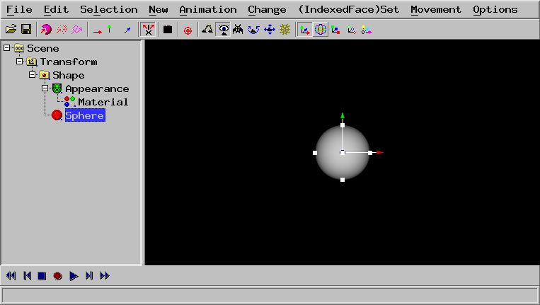
Select the Transform.
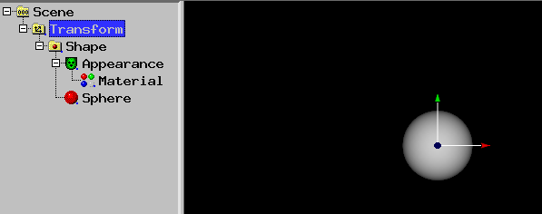
Use Animation -> Create curve animation (need Transform)
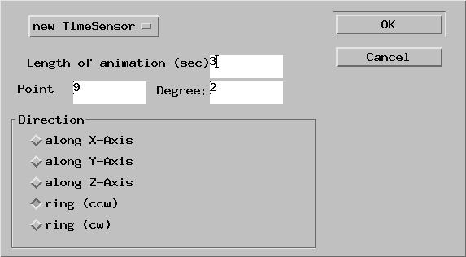
Change 5 to 2 in the form amd press OK.
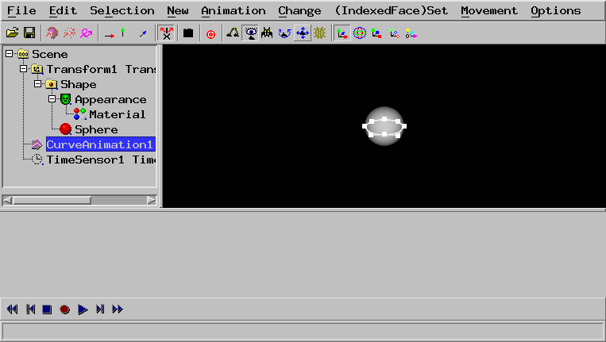
A animation path has been created.
Use New -> camera
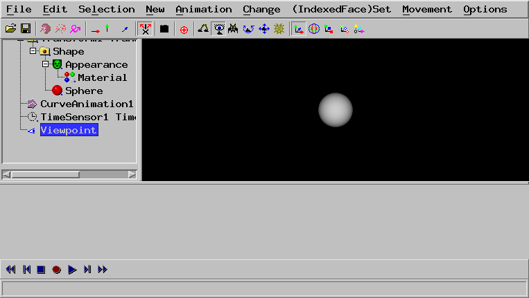
Select the Transform and use Change -> Scenegraph >
Move rest of branch into a new VrmlScene (end of VrmlCut)
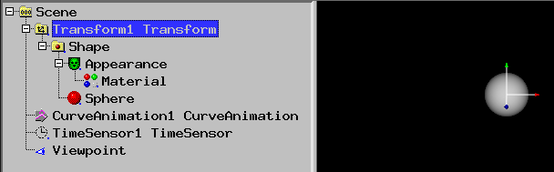
A VrmlCut node has been created. If you click to it's + and all other +,
you can see, that all nodes have been moved into the first VrmlScene.
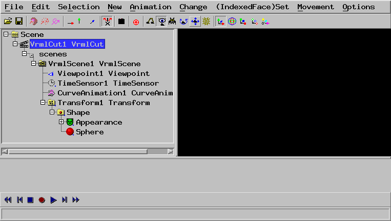
Moving Cone
To create a cone, use New -> Cone.
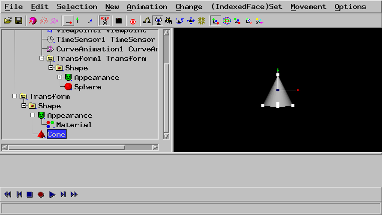
Select the Transform of the cone.
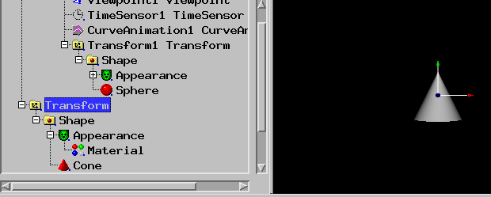
Use Animation -> Animate (need object e.g. Transform)
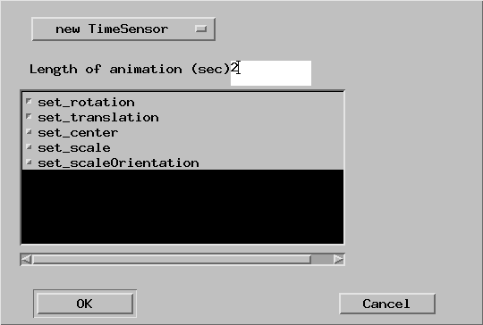
Change the 5 to 2 and press OK.
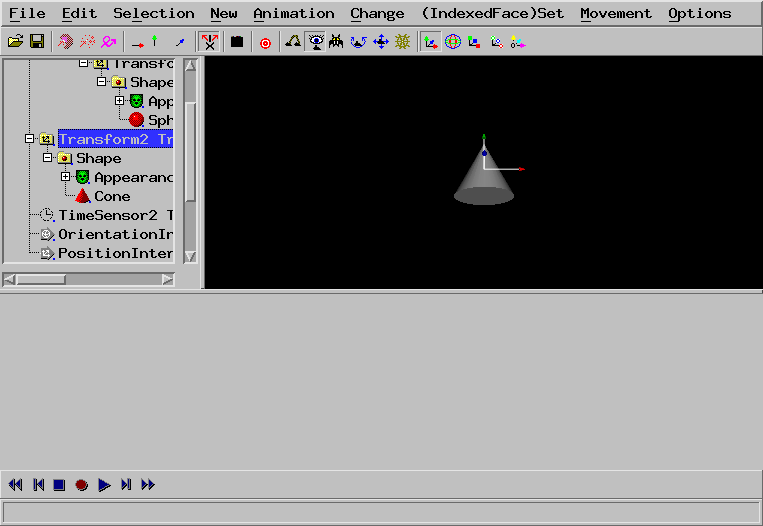
Use New -> camera
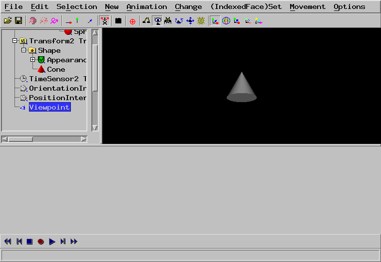
Select the PositionInterpolator which has only the start-value.
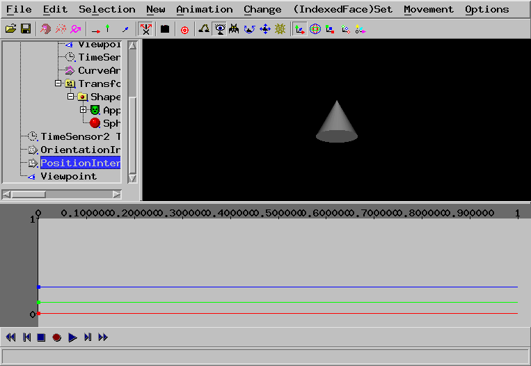
Select the Transform of the cone.
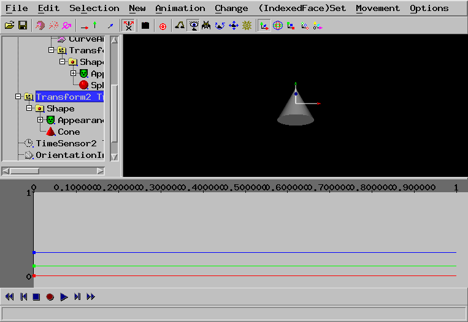
In the lower bar, click the red circle and click the double triangles.
Select the Transform of the cone.
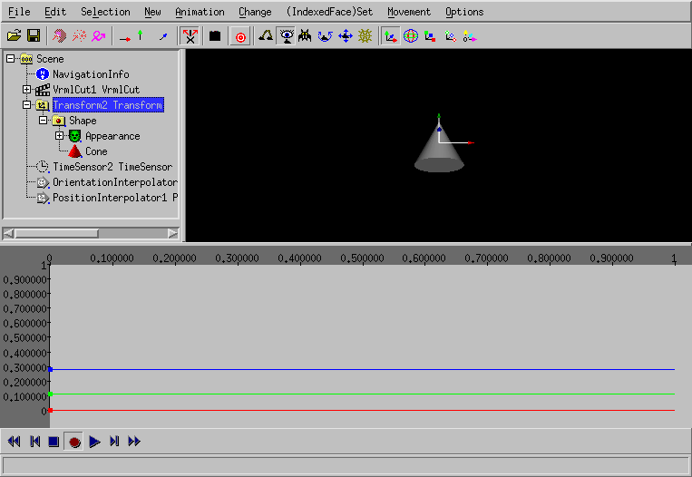
Move the cone by dragging the arrows.
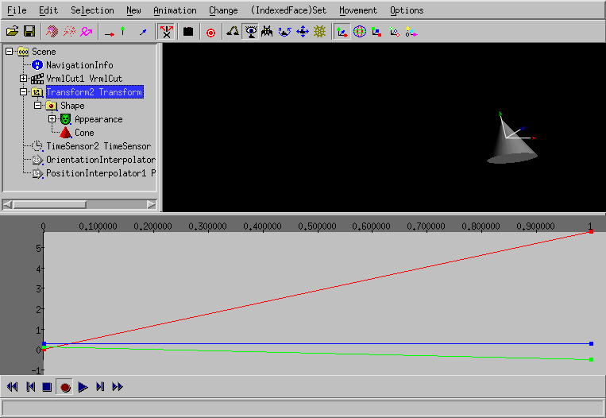
The new value has been recorded.
Select the Transform and use Change -> Scenegraph >
Move rest of branch into a new VrmlScene (end of VrmlCut)
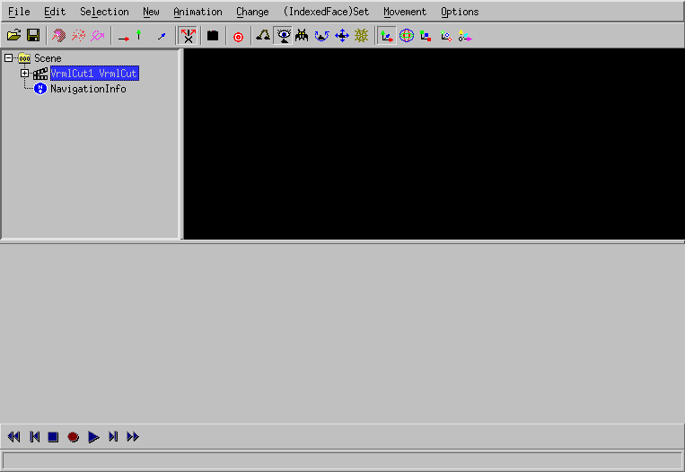
Nothing is shown, but when you press the blue triangle in the lower bar,
the animation loops.
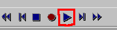
You can use e.g. File -> Export X3DOM html to export the file
into a HTML file, that can be edited with your favorite XHTML editor.
With aqsis and mencoder installed (e.g. under Ubuntu Linux) you can create the
following video
rm -rf RibExport*.tif && run_dune_and_aqsis.sh file.x3dv
mencoder -o movie.mp4 "mf://untitled*.tif" -nosound -of lavf -lavfopts format=mp4 -ovc x264 -x264encopts pass=1:bitrate=2000:crf=24 -mf type=tif:fps=24